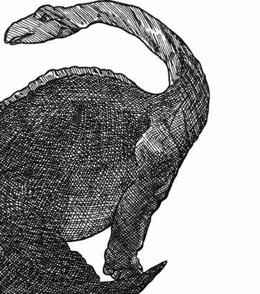

怪物图鉴 > D 部怪物 · D > 恐龙 · Dinosaur腕龙 · Brachiosaurus 表 1 腕龙 · Brachiosaurus复制引用 项目数据 出现频率不常见 出现数量1–6 护甲等级5 移动力6 寸 生命骰36 在巢穴概率无 财宝类型无 攻击次数1 次 攻击伤害5–20 特殊攻击无 特殊防御无 魔法抗性标准 智力非智能 阵营中立 体型L（长 60 尺） 灵能能力无 这是体型最沉重的恐龙，重达 85 吨，栖息于温暖的沼泽与湖泊。它们与迷惑龙相似，可能踩到小型生物，造成 8–80 点伤害。上一节：阿切隆巨龟 · Archelon Ischyros下一节：圆顶龙 · Camarasaurus